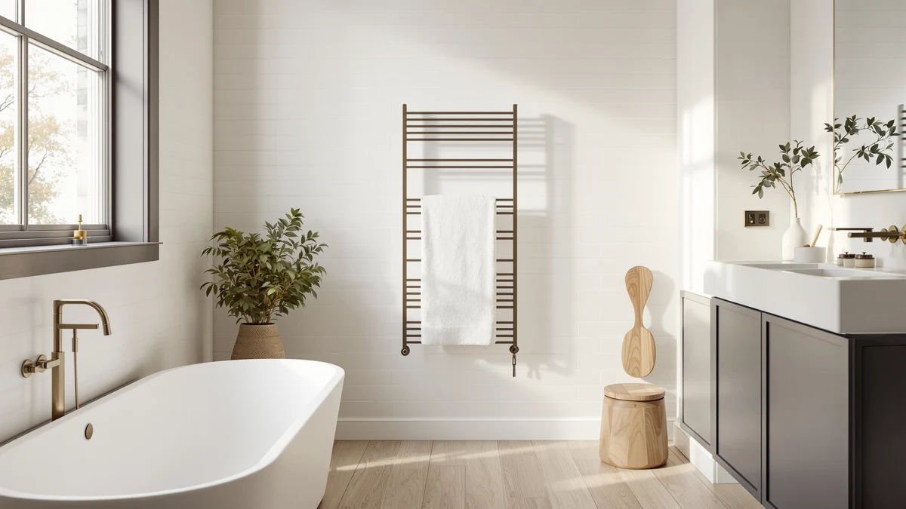

The Best Hardwired Towel Warmers (2026)
Prices and picks verified as of August 2026. Independent, reader-supported reviews.


Quick Answer
Most people who search for the best hardwired towel warmers end up happier with a plug-in bucket warmer, since it heats a towel in minutes without an electrician or a dedicated circuit. The ZAFRO Luxury Towel Warmer Bucket is our pick for most bathrooms, and the VEVOR below is worth the upgrade if you're warming towels for a full family.
Our pick: ZAFRO Luxury Towel Warmer Bucket at $39.52 Check Price on Amazon
Bottom line: our top pick is the ZAFRO Luxury Towel Warmer Bucket - Smart Timed Hot Towel at $42.87. The best budget option is the Fingertip WD Toddler Towels with Hood at $11.99.
Things to Know Before You Buy
- "Hardwired" and "plug-in" solve the same problem differently. A hardwired towel warmer or heated rack wires into your home's electrical system and usually needs an electrician, while every warmer in this guide plugs into a standard bathroom outlet and heats up the same day it arrives. See our hardwired heated towel rack guide if you specifically want a wired fixture.
- Bucket warmers heat one towel fast, not several slowly. Every warmer here wraps a single towel around a heated core and gets it warm in a few minutes, unlike a wall rack that dries multiple towels open over a longer stretch.
- Capacity ranges from 20 to 21 liters. That's enough for one oversized bath sheet or a robe, and the VEVOR fits up to four items at once if you're warming for a family.
- Child locks and auto-shutoff are standard, not extras. Every warmer we picked includes a child safety lock, and most add an auto-off timer or an overheat warning light, since these buckets run hot enough to matter around kids.
- A warmer needs a decent towel to work with. If you're missing one, the hooded kids' towels toward the bottom of this list are worth adding to the cart, even though they don't heat anything themselves.
The best hardwired towel warmers promise a permanent fixture wired straight into your bathroom wall, but almost nobody wants to open up a wall and call an electrician to keep a towel warm. We looked at what shoppers buy when they search that phrase and found that plug-in bucket warmers do the same job in minutes, with no rewiring and no inspection required. Stepping out of a hot shower onto cold tile and reaching for a clammy towel is the problem these devices solve, and the four warmers below handle it without touching your home's wiring.
Seven products made this list. Four are genuine electric towel warmers, from ZAFRO, VEVOR, Sweetcrispy, and COSTWAY, and every one plugs into a standard outlet rather than a dedicated circuit. The other three are hooded kids' towels from Fingertip WD, ORIGINAL KIDS, and IFaryMes that pair well with any warmer above but don't heat anything on their own. We sorted all seven by price, capacity, and safety features so you can match one to your bathroom and your family.
After comparing capacity, heat-up speed, and safety controls across all four warmers, the ZAFRO Luxury Towel Warmer Bucket is our pick for the best hardwired towel warmers search, at $39.52 for a 20-liter bucket with 3-level heat control and a 24-hour delay timer. The VEVOR below costs more but fits four oversized towels at once, and the Sweetcrispy is worth a look if the fastest heat-up time in this group matters most to you.
Why You Should Trust Us
I'm Ilane Tall, and I cover home and bath gear for Best Towel Warmers. Ranking the best hardwired towel warmers meant starting from what people search for and being upfront when the products that fit that need best turn out to be plug-in rather than wired into a wall. I read each listing's specifications, capacity, and safety features instead of repeating marketing copy, and I compare every unit against the others in this guide rather than against an idealized fixture that doesn't exist.
A towel warmer is a small purchase, but it's easy to get wrong, usually by buying one with no child lock in a house with kids, or a bucket too small for a real bath towel. I weigh those practical regrets heavily, because they're what buyers complain about after the fact.
How We Picked
We started with what separates a real electric towel warmer from a plain towel: heat control, capacity, and a safety feature like a child lock or auto-shutoff. Since none of the plug-in warmers that dominate this category are hardwired, we prioritized the ones that get closest to what a hardwired fixture promises, fast and even heat with no cord to trip over once it's plugged into a fixed outlet.
From there we weighed capacity against price. A 20-liter bucket that fits one oversized towel is the baseline; the VEVOR earns its higher price by fitting up to four items, while the Sweetcrispy earns its spot with the fastest stated heat-up time in the group. We added the three kids' towels only because a warmer is useless without a good towel to put in it, and we say so plainly rather than pretending they compete in the same category.
How We Compared
We built this list from each product's published specifications, dimensions, and safety features rather than a staged lab with invented numeric scores. We compare heat-up time, capacity, and control type the way a buyer shops: what fits your bathroom, what it costs, and what safety features matter with kids around.
We don't assign star ratings or point scores we made up ourselves. Where we cite a temperature, size, or price, it comes directly from the listing shown on this page, and where we flag a drawback, such as a product being a towel rather than a warmer, it reflects a real distinction, not a manufactured complaint.
Our Picks

ZAFRO Luxury Towel Warmer Bucket
What we like
- 3-level temperature control lets you match heat to towel or fabric thickness
- 24-hour delay timer warms towels or clothes overnight for a warm morning
- Clear LED display shows real-time temperature and time remaining
- Lowest price of the four true warmers in this guide at $39.52
Flaws but not dealbreakers
- 20-liter capacity fits one large item at a time, not a full family's towels
- Manufacturer warns against heating synthetic or wet fabrics
- No overheat warning light like the VEVOR includes
| Material | Stainless steel |
| Size | 24H Schedule |
The ZAFRO earns the top spot because it covers the core job better than anything else at its price. Its 20-liter bucket handles an oversized bath sheet, bathrobe, or a stack of everyday clothes, and the three temperature levels let you dial back the heat for delicate fabrics instead of blasting everything at one setting. The clear LED display tracks temperature and time in real time, so you're not guessing whether a towel is actually ready.
The 24-hour delay timer is the feature that changes daily use the most: set it before bed and wake up to a warm towel without touching the controls again. At $39.52 it costs less than half of what the VEVOR runs for similar capacity, though it lacks that model's overheat warning light. For most people asking about the best hardwired towel warmers, a plug-in bucket like this one solves the same problem for a fraction of the installation hassle.

VEVOR Towel Warmers for Bathroom
What we like
- Fits up to 4 oversized towels, blankets, or bathrobes at once
- Child lock plus a U-shaped overheat light that turns red above 140°F
- 5-side 360° heating reaches the bottom and all walls, not only the sides
- 24-hour delay timer matches the ZAFRO's overnight convenience
Flaws but not dealbreakers
- At $88.90 it costs more than double the ZAFRO
- Larger capacity means a bigger bucket taking up more floor or counter space
- No stated wattage in the listing, so budget for typical bucket-warmer running costs
| Material | Stainless steel |
| Size | 20L |
The VEVOR is the pick for households warming more than one towel at a time. Its bucket fits up to four oversized towels, blankets, or bathrobes, well beyond what the ZAFRO can hold, and the 5-side 360° heating system warms the bottom and all the walls instead of only the sides, which cuts down on the cold spots you get from simpler designs.
Safety is where the VEVOR pulls ahead of the rest of this group. Its child lock pairs with a U-shaped light that turns red once the bucket's walls pass 140°F, a visible warning the ZAFRO doesn't include. That extra capacity and safety feature come at a real cost, $88.90 versus $39.52 for the top pick, so we'd point families toward the VEVOR specifically when the bigger bucket and the overheat light are worth the premium.

Sweetcrispy Towel Warmer for Bathroom
What we like
- Reaches 150°F in about one minute, the fastest stated heat-up in this guide
- Four timer settings (15/30/45/60 minutes) plus auto-shutoff
- Child lock and a temperature-alert design for family use
- Cheapest of the four true warmers at $37.87
Flaws but not dealbreakers
- 20-liter capacity, same ceiling as the ZAFRO, not the VEVOR's four-towel capacity
- Listing doesn't specify exact bucket dimensions
- No delay timer for overnight warming like the ZAFRO and VEVOR offer
| Material | Stainless steel |
| Size | — |
The Sweetcrispy is the warmer to buy if speed matters more than anything else. It reaches its stated 150°F in about a minute, faster than any other bucket in this guide, and it does it at $37.87, a dollar and a half less than our top pick. Four timer settings, from 15 to 60 minutes, and an auto-shutoff give you more control over exactly how long a towel stays hot.
The trade-off is that it skips the 24-hour delay timer the ZAFRO and VEVOR both include, so you can't set it up the night before the way you can with those two. Its 20-liter capacity matches the ZAFRO rather than the VEVOR's larger bucket, and the child lock and temperature-alert design keep it appropriate for a house with kids. If fast heat at the lowest price is what you want from a hardwired towel warmers search, the Sweetcrispy is the one to add to your cart.

COSTWAY Towel Warmer for Bathroom
What we like
- 21-liter capacity, the largest bucket in this guide, fits robes up to 45 by 70 inches
- Reaches up to 266°F within 5 minutes and holds 158°F even after 60 minutes
- Flip-top lid, child safety lock, and overheat protection
- Heat-resistant PC top ring and non-slip base reduce burn and tip-over risk
Flaws but not dealbreakers
- At $80.39 it's still the second most expensive warmer here
- 1-hour auto shutoff is shorter than the multi-setting timers on the Sweetcrispy
- Bucket's larger footprint needs more floor or counter space than the ZAFRO
| Material | Stainless steel |
| Size | 13.5" x 18.5" |
The COSTWAY earns the budget label by comparison rather than by being cheap outright: at $80.39 it costs $8.51 less than the VEVOR while offering a full liter more capacity, 21 liters against 20, enough to fit robes up to 45 by 70 inches. It heats aggressively too, reaching up to 266°F within five minutes and still holding 158°F after a full hour, numbers pulled straight from the listing rather than a lab we ran ourselves.
Safety features track closely with the VEVOR: a child safety lock, overheat protection, and a heat-resistant PC top ring that keeps the flip-top lid from burning fingers. The 1-hour auto shutoff is shorter than the Sweetcrispy's four timer options, so plan around that if you like to set a warmer and forget it for longer. For anyone comparing the best hardwired towel warmers and wanting the VEVOR's capacity without its full price tag, the COSTWAY is the practical middle ground.

Fingertip WD Toddler Towels with
What we like
- Large 27.5 by 55 inch size works as a real bath towel, not only a hand towel
- Soft coral fleece blend absorbs water faster than regular cotton, per the listing
- Priced at $13.97, far below every warmer in this guide
- Hooded design suits kids ages 3 to 8
Flaws but not dealbreakers
- This is a towel, not a heated warmer, so it won't warm or dry anything on its own
- Doesn't include any timer, lock, or heating feature the other four picks offer
- Best treated as an accessory purchase rather than a stand-alone pick
| Material | Stainless steel |
| Size | 27.5 inches x 55 inches |
We're including the Fingertip WD with a caveat up front: it's a hooded kids' towel, not a hardwired towel warmer or a plug-in one, and it won't heat anything by itself. We kept it on this list because at $13.97 it's an inexpensive way to make sure you have a towel worth warming in the first place, and its 27.5 by 55 inch size is large enough to work as a real bath towel rather than a hand towel.
The coral fleece blend is built for kids, with a hooded design sized for ages 3 to 8 and a fiber structure the listing describes as absorbing water faster than regular cotton. If you're outfitting a bathroom with young kids and one of the four warmers above, this towel is a cheap way to close that gap. Just don't confuse it with an actual warmer when you're comparing the best hardwired towel warmers on this page.

ORIGINAL KIDS Hooded Bath Towel
What we like
- 100% ring-spun cotton at 579 GSM, denser than most kids' towels
- 30 by 54 inch size fits toddlers through age 9
- Double-stitched hem and lock-stitched corners for durability
- Gets softer with every wash, per the listing
Flaws but not dealbreakers
- Like the Fingertip WD, this is a towel, not a warmer, and adds no heat on its own
- At about 1.5 lbs it's heavier and slower to dry than a fleece towel
- Ivory color shows stains more readily than a darker towel
| Material | 100% cotton |
| Size | 1 Pack |
The ORIGINAL KIDS towel is the cotton alternative to the fleece picks on this list. Its 579 GSM ring-spun cotton is denser than most kids' towels, and at 30 by 54 inches with a hood sized for toddlers through age 9, it's built to last through a few years of growth rather than one bath season.
Like the Fingertip WD, it's a towel rather than a hardwired towel warmer, so it won't add heat on its own, but the listing notes it gets softer with every wash, and the double-stitched hem and lock-stitched corners are meant to survive daily use. At $16.19 it's a reasonable add if you'd rather pair a warm bucket above with an absorbent cotton towel than a synthetic fleece one.

IFaryMes Toddler Baby Bath Towel
What we like
- High-density coral fleece designed to reduce pilling and fading over time
- Hood doubles as a hair-drying cap and works as a light blanket in air-conditioned rooms
- Sized for ages 0 to 6, younger than the ORIGINAL KIDS' toddler-through-9 range
- Priced at $17.08, in line with the other kids' towels here
Flaws but not dealbreakers
- Another towel rather than a hardwired or plug-in warmer, so it adds no heat itself
- Animal-themed prints may not suit every household's taste
- Coral fleece needs gentler washing than the ORIGINAL KIDS' cotton
| Material | Stainless steel |
| Size | 27.5"X55" |
The IFaryMes is the softest, warmest-feeling towel of the three kids' picks here, thanks to a high-density coral fleece the listing says resists pilling and fading better than typical baby towels. It's sized for infants and toddlers from 0 to 6 years, a younger range than the ORIGINAL KIDS' cotton towel, and the hood doubles as a hair-drying cap or a light blanket for air-conditioned rooms.
It's not a hardwired towel warmer any more than the other two kids' towels on this list, so treat it the same way: a companion purchase for a nursery or family bathroom, not a substitute for the ZAFRO, VEVOR, Sweetcrispy, or COSTWAY above. At $17.08 with animal-themed prints like elephant and puppy, it's an easy add for parents who want their baby wrapped in something that feels warm the moment it comes out of the bath, even without an appliance involved.
Quick Comparison
| Product | Material | Price | Rating | Best for | Get it |
|---|---|---|---|---|---|
| ZAFRO Luxury Towel Warmer Bucket | Stainless steel | $39.52 | 4 | Fast heat-up with a 24-hour delay timer | View on Amazon → |
| VEVOR Towel Warmers for Bathroom | Stainless steel | $88.90 | 4 | Fits 4 towels with an overheat warning light | View on Amazon → |
| Sweetcrispy Towel Warmer for Bathroom | Stainless steel | $37.87 | 4 | Fastest heat-up, lowest price | View on Amazon → |
| COSTWAY Towel Warmer for Bathroom | Stainless steel | $80.39 | 4 | Largest capacity for the price | View on Amazon → |
| Fingertip WD Toddler Towels with | Stainless steel | $13.97 | 4 | A companion towel, not a warmer | View on Amazon → |
| ORIGINAL KIDS Hooded Bath Towel | 100% cotton | $16.19 | 4 | Durable cotton pick for kids | View on Amazon → |
| IFaryMes Toddler Baby Bath Towel | Stainless steel | $17.08 | 4 | Warm-feeling fleece pick for infants | View on Amazon → |
Are hardwired towel warmers better than plug-in models?
It depends on what you want.
How much electricity does a plug-in towel warmer use?
These bucket warmers don't list exact wattage on their packaging, but they behave like most small bathroom appliances, drawing power only while the heating cycle runs and shutting off automatically once the timer ends.
The Competition
These seven picks cover the two things people search for under "hardwired towel warmers": a warmer that heats fast, and a towel worth putting in it. None of the four warmers here are actually hardwired into a wall circuit, and we think that's fine for most bathrooms, since a plug-in bucket solves the same cold-towel problem without an electrician.
The VEVOR and COSTWAY both add real capacity, up to four towels and 21 liters respectively, but both cost more than the ZAFRO for that extra room. The VEVOR's overheat warning light is the reason to pick it over the COSTWAY if visible safety feedback matters to you; otherwise the COSTWAY's slightly larger bucket and lower price make it the better value of the two.
The Sweetcrispy undercuts the ZAFRO by a dollar and a half and heats faster, but it drops the 24-hour delay timer that makes the ZAFRO and VEVOR easy to set up overnight. Choose it specifically for speed, not for hands-off scheduling. The three kids' towels, Fingertip WD, ORIGINAL KIDS, and IFaryMes, aren't competing in the warmer category at all; they're towels worth pairing with whichever warmer you buy, not a substitute for one.
For most people typing in the best hardwired towel warmers, the ZAFRO Luxury Towel Warmer Bucket remains the pick worth buying first, plugged in today rather than wired into a wall next month.
Frequently Asked Questions
Are hardwired towel warmers better than plug-in models?
It depends on what you want. A true hardwired towel warmer has no visible cord, but it usually needs an electrician and a dedicated circuit before you can use it. Every warmer in this guide plugs into a standard bathroom outlet instead, so you can heat a towel today instead of scheduling an install. If you specifically want a wired fixture, our hardwired heated towel rack guide covers those.
How much electricity does a plug-in towel warmer use?
These bucket warmers don't list exact wattage on their packaging, but they behave like most small bathroom appliances, drawing power only while the heating cycle runs and shutting off automatically once the timer ends. Running one for 30 to 60 minutes a day adds a modest amount to a typical U.S. electric bill, well below what a space heater would cost.
Is it safe to use a bucket-style towel warmer around kids?
Every warmer we picked includes a child safety lock, and the VEVOR and COSTWAY add an overheat warning light or overheat protection on top of that. We'd still recommend keeping any towel warmer, hardwired or plug-in, away from unsupervised young kids, since the bucket walls do get hot during a heating cycle.
Do I need a special towel for a towel warmer, or will any towel work?
Any towel fits a bucket warmer, but a bulkier bath sheet holds heat longer than a thin towel. If you need one, the Fingertip WD, ORIGINAL KIDS, or IFaryMes towels toward the bottom of this guide all work well, even though none of them heat on their own.